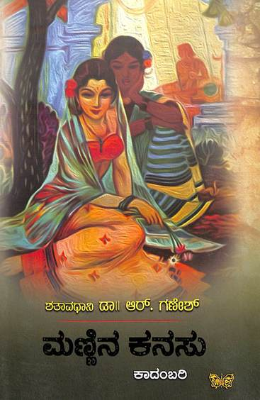

ಲೇಖಕರು: ಶತಾವಧಾನಿ ಡಾ. ಆರ್. ಗಣೇಶ್
ಪ್ರಕಾಶನ: ಸಾಹಿತ್ಯ ಪ್ರಕಾಶನ
ಪುಟಗಳು: ೬೩೦
ಶತಾವಧಾನಿ ಡಾ. ಆರ್. ಗಣೇಶ್ ಅವರ 'ಮಣ್ಣಿನ ಕನಸು' ಕಾದಂಬರಿ ಹೊರಬಂದು ಸುಮಾರು ಒಂದು ತಿಂಗಳಾಗಿದೆ. ಪುಸ್ತಕದಂಗಡಿಗಳ ಪಟ್ಟಿಯಲ್ಲಿ ಮುಂಚೂಣಿಯಲ್ಲಿದೆ ಎಂಬ ಸುದ್ದಿ ನೋಡಿದೆ. ಅದು ಯುಕ್ತವಾಗಿಯೂ ಇದೆ. ಓದುಗರು ಇಂಥ ಕಾದಂಬರಿಗೆ ಈ ಸ್ವಾಗತದ ಪ್ರತಿಕ್ರಿಯೆಯನ್ನು ನೀಡುತ್ತಿರುವುದು ಸಂತೋಷಕರ.
ಕನ್ನಡದಲ್ಲಿ ಹಲವು ಐತಿಹಾಸಿಕ ವಿಷಯಗಳ ಆಧಾರದ ಮೇಲೆ ಬಂದಿರುವಂಥ ಕೆ.ವಿ. ಅಯ್ಯರ್ ಅವರ ಶಾಂತಲಾ, ತರಾಸು ಅವರ ದುರ್ಗಾಸ್ತಮಾನ, ಎಸ್.ಎಲ್. ಭೈರಪ್ಪ ಅವರ ಸಾರ್ಥ, ಮಾಸ್ತಿ ಅವರ ಚೆನ್ನಬಸವನಾಯಕ, ಚಿಕವೀರರಾಜೇಂದ್ರ, ವಸುಧೇಂದ್ರ ಅವರ ತೇಜೋ-ತುಂಗಭದ್ರಾ ಇವೇ ಮೊದಲಾದ ಕಾದಂಬರಿಗಳನ್ನು ಹೇಳುವಾಗ, ಆ ಸಾಲಿನಲ್ಲಿ ಈಗ ಮರೆಯಬಾರದಂತಹ ಸೇರ್ಪಡೆ ಮಣ್ಣಿನ ಕನಸು. ಕನ್ನಡ ಪುಸ್ತಕ ಪ್ರಿಯರು ಓದಲೇಬೇಕಾದ ಒಂದು ಬೃಹತ್ ಕಾದಂಬರಿ.
ಸಂಸ್ಕೃತ ಸಾಹಿತ್ಯದಲ್ಲಿ ಜೊತೆಗೆ ಭಾರತೀಯ ಸಂಸ್ಕೃತಿಯ ಮೂಲ ತತ್ತ್ವಗಳಲ್ಲಿ ಶತಾವಧಾನಿ ಡಾ.ಆರ್. ಗಣೇಶ್ ಅವರ ಆಳ-ಮತ್ತು-ವಿಸ್ತಾರವಾದ ಪಾಂಡಿತ್ಯವು ಬಹುಪಾಲು ಕನ್ನಡ ಓದುಗರಿಗೆ ತಿಳಿದ ವಿಷಯವೇ. ಅದನ್ನು ಅವರ ಅಷ್ಟಾವಧಾನ, ಶತಾವಧಾನಗಳಲ್ಲಿಯೂ, ಅವರ ಅಂಕಣ ಬರಹಗಳಲ್ಲಿಯೂ, ಅವರ ಲೇಖನ ಗ್ರಂಥಗಳಲ್ಲಿಯೂ, ವಿವಿಧ ವಿಷಯಗಳಲ್ಲಿ ಅವರು ನೀಡಿರುವ ಅಸಂಖ್ಯ ಉಪನ್ಯಾಸಗಳಲ್ಲಿಯೂ ಕನ್ನಡ ಓದುಗರು ಓದಿ, ಕೇಳಿ ಮೆಚ್ಚಿದ್ದಾರೆ ಎನ್ನುವುದೇನೂ ಹೊಸ ವಿಷಯವಲ್ಲ. ಕಾದಂಬರಿ ಪ್ರಕಾರಕ್ಕೆ ಅವರ ಬರವಣಿಗೆ ಹೊಸದಾದ್ದರಿಂದ ಈ ಪುಸ್ತಕ ಪ್ರಕಟವಾಗುವ ಮೊದಲೇ ಓದುಗರಲ್ಲಿ ಸಕಾರಣವಾಗಿಯೇ ಕುತೂಹಲವನ್ನು ಮೂಡಿಸಿತ್ತು.
ಶತಾವಧಾನಿ ಡಾ.ಆರ್. ಗಣೇಶರು ಈ ಕಾದಂಬರಿಗೆ ತೆಗೆದುಕೊಂಡಿರುವ ವಸ್ತು ಸುಪ್ರಸಿದ್ಧವೇ. ಸಂಸ್ಕೃತ ಸಾಹಿತ್ಯದ ಓದುಗರಾಗಿದ್ದರೆ, ಪ್ರತಿಜ್ಞಾ ಯೌಗಂಧರಾಯಣ ಮತ್ತು ಸ್ವಪ್ನವಾಸವದತ್ತ ಎಂಬ ಭಾಸನ ನಾಟಕಗಳು, ಮೃಚ್ಛಕಟಿಕವೆಂಬ ಶೂದ್ರಕನ ಪ್ರಕರಣ — ಇವನ್ನು ಕೇಳಿಯೋ ಓದಿಯೋ ಇದ್ದೇ ಇರುತ್ತಾರೆ. ಸಂಸ್ಕೃತ ಸಾಹಿತ್ಯವನ್ನು ಓದದೇ ಹೋದರೂ, ಅಮರ ಚಿತ್ರ ಕಥೆ ಮೊದಲಾದ ಪ್ರಕಾರಗಳಲ್ಲಿಯಾದರೂ ಉದಯನ-ವಾಸವದತ್ತೆಯರ ಕಥೆಗಳನ್ನೂ, ಬುದ್ಧ-ಆಮ್ರಪಾಲಿಯರ ಕಥೆಗಳನ್ನೂ ಹಲವಾರು ಕನ್ನಡ ಓದುಗರು ಓದಿಯೇ ಇರುತ್ತಾರೆ. ಅವುಗಳನ್ನು ಓದಿದ್ದವರಿಗೆ ಈ ಕಾದಂಬರಿಯ ಹಿನ್ನಲೆ ಎಲ್ಲಿದೆ ಎಂದು ತಿಳಿಯುವುದು ಸುಲಭ. ಆದರೆ ಅವುಗಳನ್ನು ಓದಿಲ್ಲದಿದ್ದರೆ, ಇನ್ನೂ ಒಳಿತೇ ಆಯಿತು ಎನ್ನಬಹುದು — ಕಥೆ ಏನಾಗುತ್ತದೆ ಎಂಬ ಕುತೂಹಲ ಇನ್ನೂ ಹೆಚ್ಚಿಗಿರುತ್ತದೆ!
ಈ ಕಥೆ ನಡೆಯುವುದು ಸುಮಾರು ೨೫೦೦ ವರ್ಷಕ್ಕೂ ಹಿಂದೆ — ಬುದ್ಧ ಮತ್ತೆ ಮಹಾವೀರರು ಬಾಳಿ ಬದುಕಿದ್ದ ಕಾಲದಲ್ಲಿ. ಕಥೆಯ ಭೌಗೋಳಿಕ ವಿಸ್ತಾರ ಪಶ್ಚಿಮದ ಉಜ್ಜಯಿನಿಯಿಂದೀಚೆಯ ಗುಜರಾತಿನಿಂದ ಹಿಡಿದು ಪೂರ್ವದಲ್ಲಿ ಇಂದಿನ ಬಿಹಾರದ ವೈಶಾಲಿ, ರಾಜಗೃಹ, ಪಾಟಲಿಗ್ರಾಮ (ನಂತರ ಪಾಟಲಿಪುತ್ರ ಎಂದು ಪ್ರಖ್ಯಾತವಾದ ನಗರ, ಇಂದಿನ ಪಾಟ್ನಾ) ಗಳವರೆಗೆ, ಉತ್ತರದಲ್ಲಿ ನೇಪಾಳ ಕುರುಕ್ಷೇತ್ರಗಳವರೆಗೆ. ಅಲ್ಲಿದ್ದ ಹತ್ತು ಹಲವು ರಾಜರ, ಮತ್ತೆ ಗಣರಾಜ್ಯಗಳ, ಮಹಾಜನಪದಗಳ ರಾಜಕೀಯ-ಸಾಂಸ್ಕೃತಿಕ-ಆರ್ಥಿಕ ವಿಷಯಗಳನ್ನು ಸುತ್ತುವರೆಯುವಂತಹ, ಒಂದೆರಡು-ಮೂರು ವರ್ಷಗಳ ಕಾಲದೊಳಗೆ ನಡೆಯುವ ಕಥೆ ಇದರದ್ದು.
ಕಥೆಯ ಹಂದರದ ಬಗ್ಗೆ ನಾನು ಇಲ್ಲಿ ಹೆಚ್ಚಿಗೆ ಹೇಳಹೋಗುವುದಿಲ್ಲ. ಆದರೆ ಮುಖ್ಯ ಪಾತ್ರಗಳೆಲ್ಲ ರಕ್ತ-ಮಾಂಸಗಳಿಂದ ತುಂಬಿಕೊಂಡು ಪುಷ್ಟಿಯಾಗಿ ಕಾಣಬರುವ ನಿತ್ಯಜೀವನದ ಪಾತ್ರಗಳಾಗಿದ್ದಾರೆ ಎಂದು ಹೇಳಲೇಬೇಕು. ಆ ಕಾಲದ ಸಾಮಾಜಿಕ ಮತ್ತು ಮತ ಧರ್ಮಗಳ ಅಂಶಗಳು, ಮತ್ತು ವ್ಯಾಪಾರ ವಹಿವಾಟುಗಳ ವಿಚಾರಗಳ ಬಗ್ಗೆ ಯಾವುದೇ ಶಾಲಾ-ಕಾಲೇಜುಗಳ ಚರಿತ್ರೆಯ ಪುಸ್ತಕಗಳನ್ನು ಓದಿದರೆ ದೊರೆಯುವುದಕ್ಕಿಂತ ಹೆಚ್ಚಿನ ನಿಖರವಾದ, ಸತ್ಯಕ್ಕೆ ಹತ್ತಿರವಾದ ಅಂಶಗಳು ಈ ಕಾದಂಬರಿಯಲ್ಲಿ ದೊರೆಯುತ್ತವೆ. ಉತ್ತರ ಭಾರತದಲ್ಲಿ ಅಂದು ಬಳಕೆಯಲ್ಲಿದ್ದ ಭಾಷೆ, ಉಪಭಾಷೆಗಳು, ಒಳನುಡಿಗಳ ಪ್ರಸ್ತಾಪ, ಅವುಗಳ ನಡುವೆ ನಡೆಯುತ್ತಿದ್ದ ಸಂವಹನ — ಇವೆಲ್ಲ ಅಷ್ಟೇ ಸೊಗಸಾಗಿ ಮೂಡಿ ಬಂದಿವೆ. ಅಂದಿನ ಕಾಲದ ಜನಜೀವನ ಶೈಲಿ, ಅವರ ರಂಜನೆಗಿದ್ದ ಕಲಾಪ್ರಕಾರಗಳು, ಊರು-ಕೇರಿಗಳ ವಿನ್ಯಾಸ, ಸಂಚಾರ ಸೌಕರ್ಯಗಳು, ದೇಶ ವಿದೇಶಗಳೊಡನೆ ಅವರಿಗಿದ್ದ ವ್ಯಾಪಾರ ಸಂಬಂಧಗಳು, ಯುದ್ಧ ತಂತ್ರಗಳು — ಇಂತಹ ಹಲವಾರು ವಿಷಯಗಳು ಕಥೆಯ ಎಳೆಯೊಡನೆ ಹಾಸುಹೊಕ್ಕಾಗಿವೆ.
ಶತಾವಧಾನಿಗಳ ಕನ್ನಡ ಶೈಲಿ ಸಾಮಾನ್ಯವಾಗಿಯೇ ಸಂಸ್ಕೃತ ಪದಗಳನ್ನು ಹೆಚ್ಚಾಗಿ ಬಳಸುವಂತಹ ಸಾಂಪ್ರದಾಯಿಕ ಶೈಲಿ. ಈ ಕಾದಂಬರಿಯಲ್ಲಿ ಅದು ಒಂದು ಕೈ ಮೇಲೇ ಎನ್ನುವಂತಿದೆ. ಅದಕ್ಕೆ ಕಥಾವಸ್ತು, ಕಥೆ ನಡೆದ ಕಾಲ ಮತ್ತೆ ಪ್ರದೇಶ ಎಲ್ಲವೂ ಕಾರಣವೆನ್ನಬಹುದು. ಹಾಗಾಗಿ ಓದುಗರ ಅನುಕೂಲಕ್ಕೆ ಪುಸ್ತಕದ ಕೊನೆಯಲ್ಲಿ ಪಾರಿಭಾಷಿಕ/ಕಠಿನ ಪದಗಳ ಪಟ್ಟಿಯನ್ನು ಕೊಡಲಾಗಿದೆ.
ನೀವು ಅರ್ಥಶಾಸ್ತ್ರ, ಕಾಮಶಾಸ್ತ್ರ, ನಾಟ್ಯಶಾಸ್ತ್ರ — ಮೊದಲಾದ ಪುಸ್ತಕಗಳ ಹೆಸರನ್ನು ಕೇಳಿರಬಹುದು. ಈ ಪುಸ್ತಕಗಳ ಮುಖ್ಯ ಅಂಶಗಳ ಹೊಳಹನ್ನು ನೀವು ಈ ಕಾದಂಬರಿಯಲ್ಲಿ ಕಾಣಬಲ್ಲಿರಿ. ಮಗಧ ಸಾಮ್ರಾಜ್ಯವನ್ನು ಕಟ್ಟಲು ಕಾರಣನಾದ ಚಾಣಕ್ಯನ ಹೆಸರನ್ನು ನೀವು ಕೇಳಿರುತ್ತೀರಿ — ಆದರೆ ಅವನಿಗೇ ಗುರುವಾಗಬಲ್ಲಂತಹ ಅಮಾತ್ಯ ಯೌಗಂಧರಾಯಣನ ಪಾತ್ರ ನಿಮಗಿಲ್ಲಿ ಕಣ್ಣಿಗೇ ಕಟ್ಟುತ್ತದೆ. ವೀಣೆ ನುಡಿಸಿ ಆನೆಯನ್ನು ಪಳಗಿಸಬಲ್ಲನೆಂಬ ಕೀರ್ತಿ ಪಡೆದ ರಾಜ ಉದಯನನ ಬಗ್ಗೆ ನೀವು ಕೇಳಿರುತ್ತೀರಿ. ಆದರೆ ಅದರ ಹಿಂದೆ ಅವನು ಮಾಡಿದ್ದಿರಬಹುದಾದ ಸಾಧನೆ ಇಲ್ಲಿ ನಿಮಗೆ ಕಂಡುಬರುತ್ತದೆ.
ಪ್ರಾಚೀನ ಭಾರತದಲ್ಲಿ ಇದ್ದ ಆಚರಣೆಗಳೆಲ್ಲ ಇಂದಿಗೆ ಒಪ್ಪಿಗೆಯಾಗಬಲ್ಲವೇ? ಪ್ರಭುತ್ವ ಒಳ್ಳೆಯದಿದ್ದಾಗ ಏನಾಗುತ್ತದೆ? ದುರ್ಬಲವಾಗಿದ್ದಾಗ ಏನಾಗುತ್ತದೆ? ನಿರಂಕುಶವಾಗಿ ಹೋದರೆ ಏನಾಗುತ್ತದೆ? ಪ್ರಜಾಪ್ರಭುತ್ವವಿದ್ದಾಗ ಎಂತ ಮೂರ್ಖತನದ ನಿರ್ಧಾರಗಳೂ ಸಮಾಜವಿರೋಧಿಯಾಗಿ ನಡೆಯಬಹುದು? ಇಂತಹ ನೂರಾರು ವಿಷಯಗಳ ಬಗ್ಗೆ ನಿಮ್ಮ ಮನಸ್ಸನ್ನು ತೆರೆದುಕೊಳ್ಳಲು ಈ ಕಾದಂಬರಿ ಬೆಳಕನ್ನು ಚೆಲ್ಲುತ್ತದೆ. ಇಲ್ಲಿಯವರೆಗೆ ತೆರೆದಿಲ್ಲದ ಒಂದು ಮಹಾದ್ವಾರವನ್ನು ನಿಮಗೆ ತೆರೆಯುತ್ತದೆ.
ಪುಸ್ತಕವನ್ನು ಅದರ ಮುಖಪುಟದಿಂದ ಅಳೆಯಬಾರದು ಅನ್ನುವುದು ನಾಣ್ಣುಡಿ. ಆದರೆ ಈ ಪುಸ್ತಕ ಬಹಳ ಸುಂದರವಾಗಿ ಮುದ್ರಿತವಾಗಿದ್ದು ಮುಖಪುಟವನ್ನು ನೋಡಿದರೆ ಕೈಗೆತ್ತಿಕೊಳ್ಳುವಂತಿದೆ. ಎತ್ತಿಕೊಂಡರೆ, ಓದಲೇಬೇಕೆನಿಸುವಂತಿದೆ. ಇಂತಹ ಪುಸ್ತಕವು ಇತರ ಭಾರತೀಯ ಭಾಷೆಗಳಿಗೂ ಅನುವಾದವಾದರೆ ಬಹಳ ಸೊಗಸಾಗಿರುತ್ತದೆ, ಮತ್ತೆ ಇನ್ನೂ ಹೆಚ್ಚು ಸಂಸ್ಕೃತಿ-ಆಸಕ್ತರಿಗೂ ತಲುಪುತ್ತದೆ ಎಂದು ನನಗೆನಿಸಿತು.
ಪುಸ್ತಕಮಿತ್ರರೆ, ಪುಸ್ತಕವನ್ನು ಕೊಳ್ಳಿ. ಓದಿ.